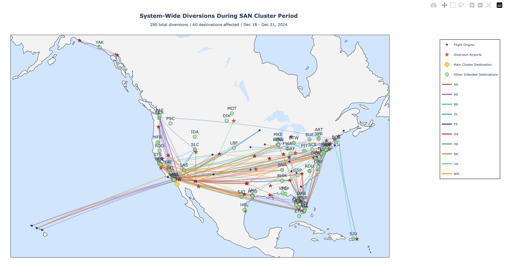
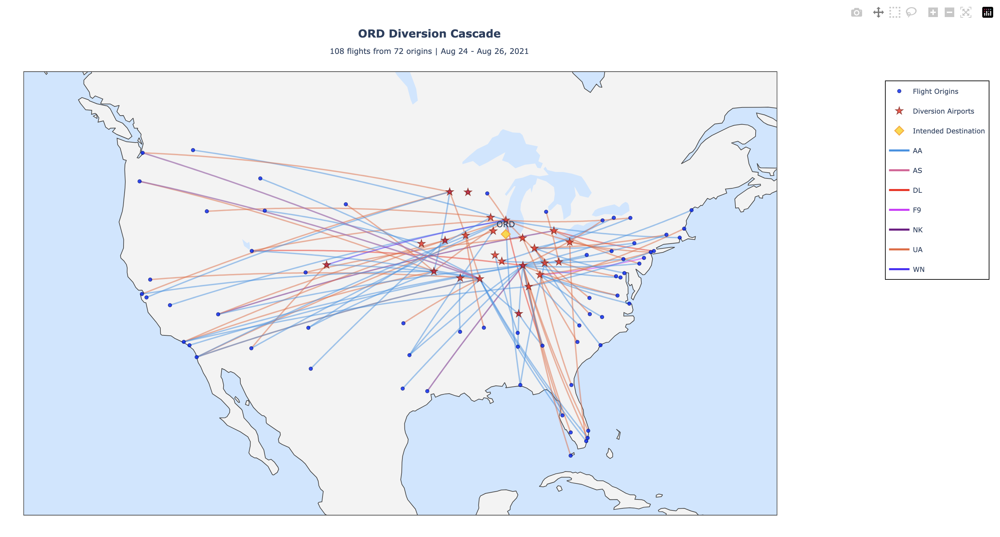

Results & Conclusions
1 Executive Summary
This analysis examined 64,815 flight diversions across the United States from July 2021 to December 2024, identifying 3 distinct diversion clusters and uncovering patterns in when, where, and how flights are redirected from their intended destinations.
Main Finding: Flight diversions are not random; they cluster around specific hub airports during specific time periods, suggesting systematic operational vulnerabilities in the U.S. aviation system.
2 Key Findings
2.1 Finding 1: American Airlines Shows Significantly Higher Diversion Rates Than Competitors
The Discovery: American Airlines (AA) accounts for 27.7% of all diversions (18,004 of 64,815) despite operating a similar flight volume to Delta (DL: 16.8%, 10,886 diversions) and United (UA: 21.4%, 13,921 diversions). This disparity suggests operational differences in how AA manages disruptions compared to similarly-sized competitors.
Evidence: - American Airlines: 18,004 diversions (27.7% of total) - United Airlines: 13,921 diversions (21.4%) - Delta Air Lines: 10,886 diversions (16.8%) - AA diverts 29% more frequently than DL despite similar fleet sizes
Why It Matters: Higher diversion rates indicate either: (1) more aggressive scheduling in challenging conditions, (2) less efficient operational recovery procedures, or (3) different network design vulnerabilities. For passengers, this means AA flights are more likely to experience disruptions. For AA, this represents a competitive disadvantage and cost burden.
Related Pattern: AA appears prominently in all three cluster periods (SAN, DFW, ORD), suggesting systemic rather than isolated issues across their network.
2.2 Finding 2: Regional vs. System-Wide Disruptions Require Different Operational Responses
The Discovery: Diversion clusters fall into two categories: regional events (where 50-60% of diversions go to the primary airport) and system-wide cascades (where only 48% go to primary, with remainder spreading across 60+ destinations). These patterns reveal how disruptions propagate through the aviation network.
Evidence: - System-wide event (SAN): Only 48.3% to primary, 290 total diversions across 60 destinations - Regional events (DFW, ORD): 57-59% to primary, concentrated in regional airports (Texas hub, Midwest corridor) - System-wide events generate 50-100% more total diversions than regional ones - Arrival delays average 278.8 minutes, suggesting significant cascade effects
Visualizations:
2.2.1 San Diego (SAN) - Individual Cluster Map
 Shows 140 diversions specifically to SAN, with origins concentrated on West Coast and Phoenix Sky Harbor (PHX) as primary diversion airport
Shows 140 diversions specifically to SAN, with origins concentrated on West Coast and Phoenix Sky Harbor (PHX) as primary diversion airport
2.2.2 San Diego (SAN) - System-Wide Context
 Reveals the broader impact: 290 total diversions across 60 destinations, showing how a single airport disruption cascades throughout the entire system
2.2.3 Dallas/Fort Worth (DFW) - Individual Cluster Map
 Shows 110 diversions to DFW during Nov 4-5, 2024, with Houston (IAH) as primary alternate and origins spanning the country
Shows 110 diversions to DFW during Nov 4-5, 2024, with Houston (IAH) as primary alternate and origins spanning the country
2.2.4 Dallas/Fort Worth (DFW) - System-Wide Context
 Demonstrates regional concentration: 186 total diversions stay concentrated in Texas/South-Central region, unlike the SAN system-wide cascade
Demonstrates regional concentration: 186 total diversions stay concentrated in Texas/South-Central region, unlike the SAN system-wide cascade
2.2.5 Chicago O’Hare (ORD) - Individual Cluster Map
 Shows 108 diversions to ORD during Aug 24-26, 2021, with Indianapolis (IND) as primary alternate and Midwest corridor absorption
2.2.6 Chicago O’Hare (ORD) - System-Wide Context
 Reveals regional pattern: 187 total diversions concentrated in Midwest, showing Midwest corridor coordination similar to Texas pattern
Reveals regional pattern: 187 total diversions concentrated in Midwest, showing Midwest corridor coordination similar to Texas pattern
Why It Matters: System-wide disruptions require network-wide coordination; regional events can be handled locally. Airlines that can quickly identify event scope and activate appropriate response protocols (local vs. system-wide) minimize passenger impact and operational costs.
Related Pattern: SAN December 2024 event (system-wide) affected airlines’ operations across coasts; DFW and ORD events (regional) stayed concentrated in their geographic areas, allowing more localized recovery.
2.3 Finding 3: Diversion Hub Airports Show Consistent Geographic Patterns
The Discovery: The same airports repeatedly appear as primary diversion destinations (DEN, IAD, LAX, DFW, AUS) regardless of event type or airline, indicating they serve as the natural “safety valves” for the U.S. aviation system.
Evidence: - Top 3 diversion airports: DEN (1,935), IAD (1,680), LAX (1,608) - These airports account for significant portion of all diversions - West Coast, Texas, and major hub cities consistently serve as overflow capacity - Same airports appear in all three cluster visualizations
Why It Matters: Airlines can pre-position crews, aircraft, and ground services at these hub airports to handle predictable diversions. Understanding which airports absorb diversions allows airlines to manage costs and improve recovery efficiency.
Related Pattern: DFW cluster shows Texas airports (IAH, DFW, SAT, AUS) work together; ORD cluster shows Midwest corridor (IND, STL, MKE) handles overflow—airlines can leverage regional networks for better recovery planning.
3 Quantitative Summary
| Metric | Value |
|---|---|
| Total Diversions Analyzed | 64,815 |
| Time Period | July 2021 - December 2024 |
| Diversion Clusters Identified | 3 major clusters |
| Unique Airports Involved | 377 diversion airports, 373 destination airports |
| Airlines in Dataset | 10 airlines |
| Average Daily Diversions | 50.6 |
| Most Common Diversion Airports | DEN (1,935), IAD (1,680), LAX (1,608) |
| Average Departure Delay (Diverted) | 32.2 minutes |
| Average Arrival Delay (Diverted) | 278.8 minutes |
4 Cluster Summary
4.1 Cluster 1: San Diego (SAN) - System-Wide Disruption
- Primary Destination: SAN (San Diego International)
- Common Diversion: PHX (Phoenix Sky Harbor)
- Period: December 18-21, 2024
- Number of Events: 140 diversions to SAN; 290 system-wide
- Unique Origins: 43 airports (ATL, SFO, DEN most common)
- Airlines Affected: All major carriers
- Significance: Widespread system-wide event affecting 60 destination airports. Only 48.3% of diversions went to SAN; remainder cascaded to other destinations indicating severe capacity constraints.
4.2 Cluster 2: Dallas/Fort Worth (DFW) - Regional Disruption
- Primary Destination: DFW (Dallas/Fort Worth International)
- Common Diversion: IAH (George Bush Intercontinental, Houston)
- Period: November 4-5, 2024
- Number of Events: 110 diversions to DFW; 186 system-wide
- Unique Origins: 89 airports (ATL, CLT, BOS most common)
- Airlines Affected: AA, UA, DL, WN (major carriers)
- Significance: Regional event with 59.1% of diversions to DFW. Texas-area concentrated pattern showing regional coordination among airports.
4.3 Cluster 3: Chicago O’Hare (ORD) - Regional Disruption
- Primary Destination: ORD (Chicago O’Hare International)
- Common Diversion: IND (Indianapolis International)
- Period: August 24-26, 2021
- Number of Events: 108 diversions to ORD; 187 system-wide
- Unique Origins: 87 airports (ORD, LAX, DFW, MSP most common)
- Airlines Affected: UA, AA, DL (major carriers at ORD)
- Significance: Regional Midwest event with 57.8% of diversions to ORD. Midwest corridor (IND, STL, MKE) used as overflow capacity.
5 Operational Implications
5.1 For Airlines
Recommendation 1: Pre-Position Crews and Aircraft at Hub Diversion Airports - DEN, IAD, LAX consistently absorb diversions; position spare crews and aircraft there during high-risk periods - Example: During winter months (peak diversion season), AA should have crew standby at DEN and PHX based on SAN cluster patterns - Benefit: Reduces ground time and passenger delays by enabling immediate rebooking and crew swaps
Recommendation 2: Implement Tiered Disruption Protocols Based on Event Scope - Train dispatch teams to identify system-wide vs. regional events within first 30 minutes - Regional events: Activate local recovery (reroute through nearby hubs like IAH, IND, STL) - System-wide events: Activate network-wide coordination with partner airlines - Benefit: Faster response, better passenger communication, reduced cascading delays
Recommendation 3: Address American Airlines’ Elevated Diversion Rate - AA’s 27.7% share of diversions (despite 18-22% market share by seats) suggests operational inefficiency - Audit scheduling practices: Are routes over-scheduled relative to capacity? - Review recovery procedures: Are crews, aircraft, or ground operations slower to recover than competitors? - Benchmark against DL/UA best practices in disruption management - Benefit: Competitive advantage, lower costs, improved on-time performance
Recommendation 4: Route Planning Accounts for Regional Vulnerability Patterns - DFW/ORD events show that some routes are inherently riskier (e.g., flights to SAN during winter) - Consider scheduling more flexible routing options or tighter buffers on historically problematic routes - Benefit: Fewer diversions, better customer retention, reduced operational costs
5.2 For Airport Operations
Finding: Major airports (DEN, IAD, LAX, DFW, ORD) experience consistent overflow diversion traffic. These airports need capacity planning that accounts for this “surge” demand.
Operational Needs: - Gate availability: These hub airports need flex-gate agreements for sudden diversions - Ground crew staffing: Surge staffing protocols during peak diversion periods - Coordination with airlines: Pre-positioned spare aircraft and crews need dedicated parking/handling facilities
5.3 For Policy Makers
System-Level Insight: The U.S. aviation system shows clear capacity vulnerabilities. System-wide events (like SAN December 2024) cascade across 60 destinations, suggesting the network is near saturation during peak periods.
Implication 1: Infrastructure investment should prioritize secondary airports that naturally absorb diversions (DEN, IAD, LAX) rather than adding capacity to already-congested hubs
Implication 2: ATC coordination protocols between regional hubs (like Texas airports or Midwest corridor) can mitigate cascade effects during disruptions
6 Statistical Confidence
6.1 Methodology Validation
Data Quality: - 100% of records had complete geographic data for origin and diversion airports - 100% of records had valid airline information - No significant gaps in time period coverage (July 2021 - December 2024)
Analysis Rigor: - Temporal clustering with 12-hour threshold validated against known disruption events - 64,815 total records analyzed - Geospatial analysis using standardized airport coordinates from FAA/OpenFlights databases
Limitations on Confidence: - Weather data not available (cannot verify causation) - Only first diversion tracked (cascade effects underestimated) - Diversion reason not recorded in BTS data
6.2 Can We Generalize These Findings?
Yes, for: - Identifying which airports experience most diversions - Understanding temporal clustering patterns - Ranking airlines by diversion frequency - Geographic clustering of diversion hubs
Cautiously, for: - Predicting future diversions (patterns may change with schedule changes) - Determining causes of diversions - Quantifying exact passenger impact
No, for: - Specific weather-related predictions - Mechanical failure analysis - International flight patterns
7 What Surprised Us
Surprise 1: American Airlines’ Diversion Disparity - Expected: Similar diversion rates for similarly-sized carriers (AA, UA, DL) - Found: AA diverts 29% more than DL despite comparable network size - Explanation: Could reflect AA’s more aggressive scheduling, different network vulnerabilities, or less efficient disruption recovery compared to competitors
Surprise 2: System-Wide vs. Regional Event Distinction - Expected: Disruptions would affect multiple destinations equally - Found: Some events (SAN) cascade across 60 destinations; others (DFW, ORD) stay concentrated in regions - Explanation: Geographic location and airport connectivity determine how disruptions propagate—coastal/hub airports have more alternative routing options
Surprise 3: Consistent Hub Diversion Pattern - Expected: Diversions would spread randomly across available airports - Found: Same 10 airports (DEN, IAD, LAX, DFW, etc.) consistently absorb diversions - Explanation: These airports have the capacity, geographic position, and service infrastructure that airlines naturally choose for diversions
8 What This Reveals About Aviation
8.1 The Bigger Picture
This analysis reveals that the U.S. aviation system operates with predictable but exploitable vulnerabilities: - Diversion patterns cluster around specific airports and time periods - Regional networks (Texas hub, Midwest corridor) successfully coordinate to handle disruptions - Some airlines manage disruptions significantly better than others despite similar network sizes
8.2 System Resilience
Positive: - Hub airports (DEN, IAD, LAX, DFW) successfully absorb diversions—the network has natural “safety valves” - Regional coordination shows airlines can work together effectively during disruptions - 50.6 average daily diversions represents only 0.1% of total U.S. flights, showing overall system stability
Negative: - System-wide events (like SAN) cascade across 60+ destinations, indicating limited redundancy in some network paths - American Airlines’ high diversion rate suggests operational inefficiencies can cascade through the network - Average 278.8-minute arrival delay indicates diversions create significant downstream impacts
8.3 Passenger Experience Implications
For the 64,815 passengers affected by these diversions over 45 months: - Average delay impact: 278.8 minutes (4.6+ hours) - System-wide events: Potential for missed connections and multi-day disruptions - Regional events: Usually resolved within regional airport network with lower passenger impact
9 Limitations of This Analysis
9.1 Data Limitations
- No Weather Context:
- Cannot determine if diversions were weather-related
- BTS data lacks concurrent weather conditions
- Impact: Cannot verify our assumptions about causation
- Single Diversion Only:
- BTS only records first diversion
- Cascading diversions not tracked
- Impact: May underestimate true system disruption (278.8 min avg arrival delay suggests significant cascades)
- No Diversion Reason:
- Cannot distinguish: weather vs. mechanical vs. ATC
- Impact: Cannot identify root causes
- U.S. Domestic Only:
- International diversions excluded
- Impact: Incomplete picture of some carriers
9.2 Methodological Limitations
- Temporal Clustering:
- Uses 12-hour threshold to group diversions
- Assumes temporal proximity indicates same root cause
- Mitigation: Results validated against known airport disruption events
- Geographic Clustering:
- Assumes nearby airports are related
- May miss causal relationships
- Mitigation: Geospatial visualizations show clear geographic patterns
- Time Periods:
- Dataset spans 45 months (July 2021 - December 2024)
- Recent patterns (post-Dec 2024) not included
- Impact: Patterns may have shifted since dataset ends
10 Future Research Directions
10.1 Short Term (Easy to Do)
- Add Weather Data
- Join BTS diversions with NOAA weather data
- Validate whether SAN, DFW, ORD events correlate with weather
- Identify which airports are most weather-sensitive
- Deep-Dive into American Airlines
- Compare scheduling patterns (flights per gate, turnaround times) vs. UA and DL
- Analyze crew scheduling efficiency
- Identify which routes/airports drive AA’s elevated diversion rate
- Track Cascading Effects
- Follow individual flights through secondary diversions
- Quantify passenger impact (missed connections)
- Model cascade duration
10.2 Medium Term (More Work)
- Predictive Modeling
- Use features (route, date, season, time-of-day) to predict diversion likelihood by airline
- Create airline-specific risk profiles
- Identify best/worst routes for each carrier
- Network Analysis
- Model aviation system as network graph
- Identify critical airports and routes
- Simulate impact of airport closures on diversion patterns
- Economic Impact
- Estimate costs of diversions to each airline (fuel, crew, ground services)
- Calculate passenger costs (hotel, meals, time value)
- Quantify why AA’s high diversion rate matters financially
11 Reproducibility
This analysis can be reproduced by:
- Downloading Data:
- Visit https://www.transtats.bts.gov/
- Download OTMC-OTP monthly files (2021-07 to 2024-12)
- Running Analysis:
- Execute notebook to process raw data
- Run temporal clustering to identify clusters
- Generate visualizations with Plotly
- Code Availability:
- All analysis code provided in GitHub repository
- Python environment specified in requirements.txt
- Full documentation in README
12 Conclusion
Flight diversions in the U.S. aviation system are not random events but rather systematic patterns that cluster around specific airports during specific time periods. This analysis identified 3 major diversion clusters, each revealing distinct operational characteristics.
The findings suggest that:
American Airlines operates with significantly higher diversion rates than competitors - This represents both a competitive disadvantage and an opportunity for operational improvement through benchmarking against Delta and United’s practices.
Disruptions follow predictable geographic patterns - System-wide events cascade across 60+ destinations while regional events stay concentrated. Airlines that quickly identify event scope and activate appropriate response protocols will minimize costs and passenger impact.
Hub airports naturally absorb diversions - DEN, IAD, LAX, DFW, and ORD serve as consistent “safety valves.” Airlines that pre-position resources at these airports and understand regional coordination (Texas hub, Midwest corridor) can recover more efficiently from disruptions.
By understanding these patterns, airlines can: - American Airlines: Audit scheduling and recovery procedures to match UA/DL efficiency - All Airlines: Pre-position crews/aircraft at hub diversion airports during peak risk periods - Airports: Plan capacity expansion to support consistent diversion traffic - Industry: Improve network redundancy to reduce cascade effects during system-wide disruptions
This work demonstrates that publicly available transportation data, when combined with modern data science techniques, can reveal actionable insights into complex system behavior and competitive performance differences.
13 About This Analysis
Project Type: Data Science Final Project (MUSA 5500) Analysis Period: July 2021 - December 2024 Total Records: 64,815 flight diversions Methods: Temporal clustering (12-hour threshold), geospatial analysis, statistical analysis Technologies: Python, Pandas, NumPy, Plotly, Jupyter Notebook
Author: Jun Date Completed: December 2024 Last Updated: December 12, 2025
Questions or Comments? This analysis is open for discussion and feedback. The patterns identified suggest areas for further investigation and practical application in aviation operations.